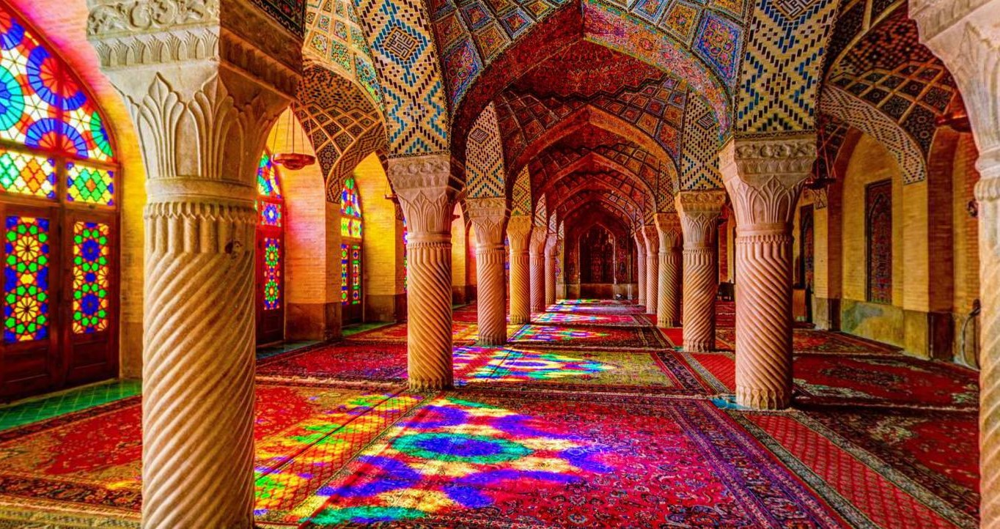
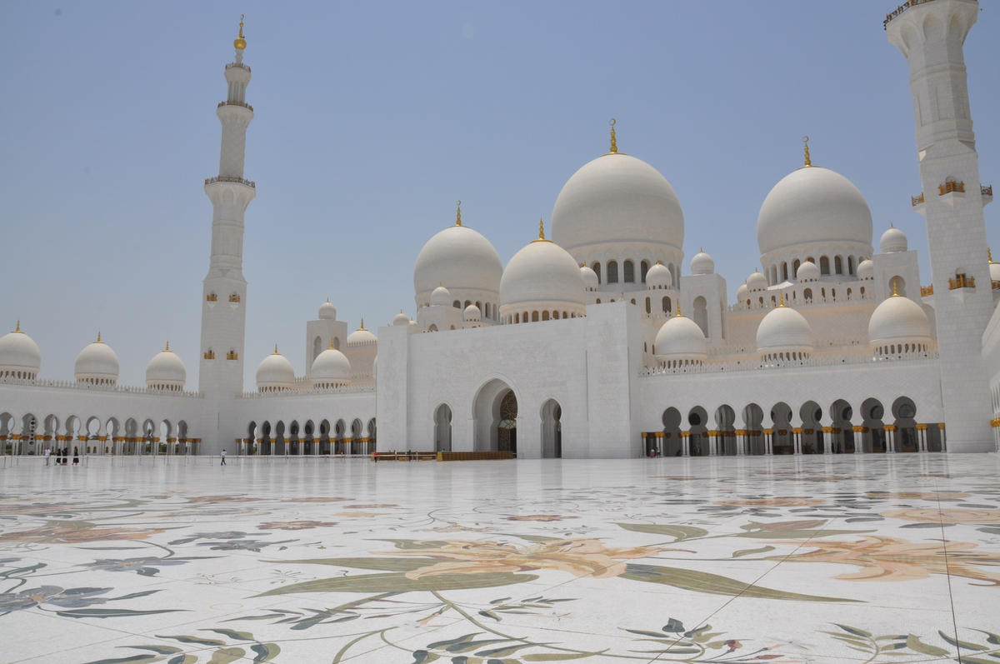
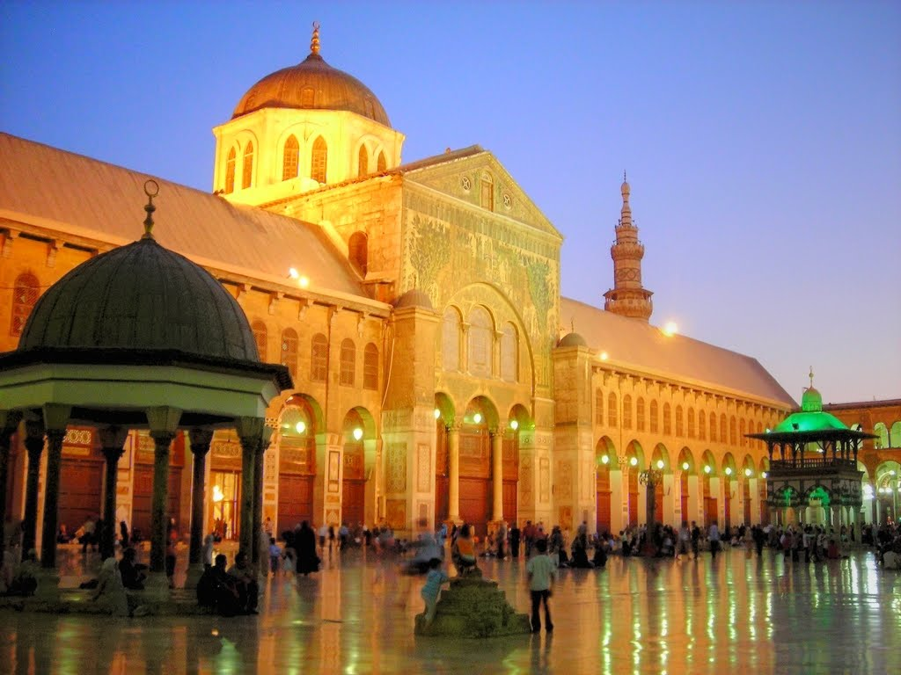
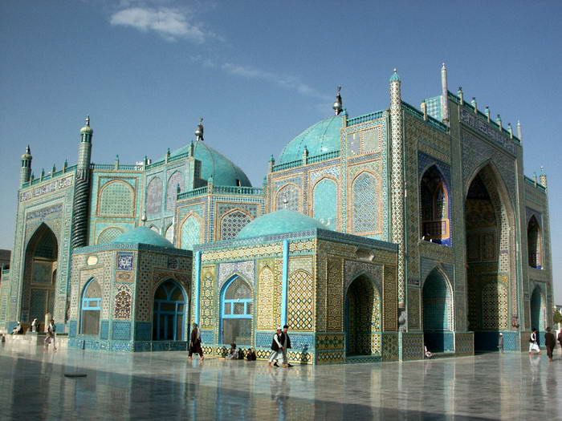
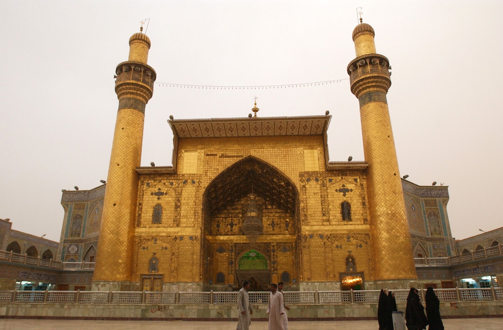
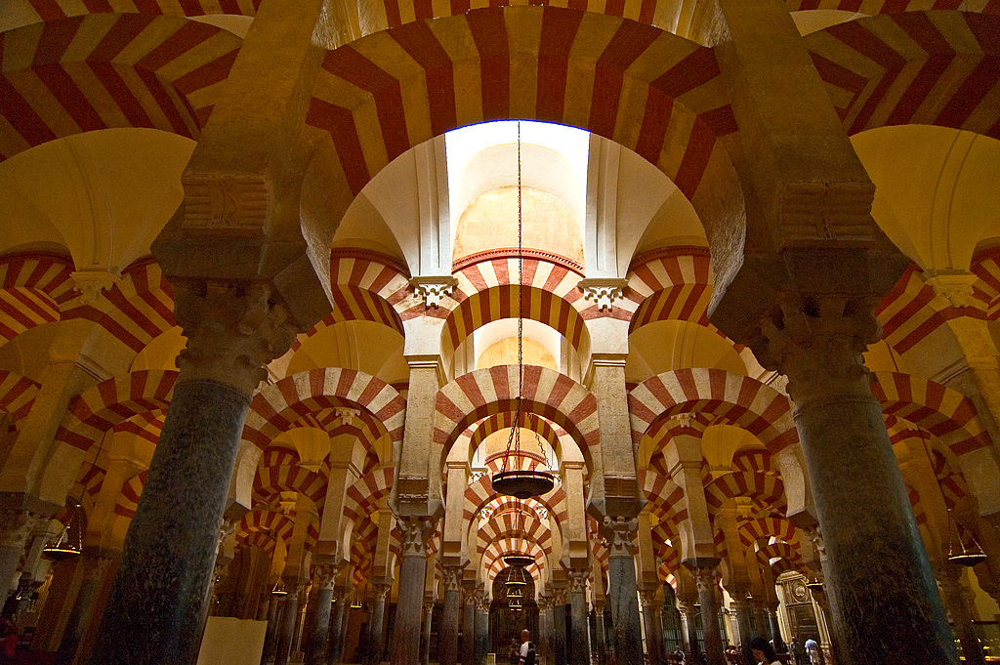
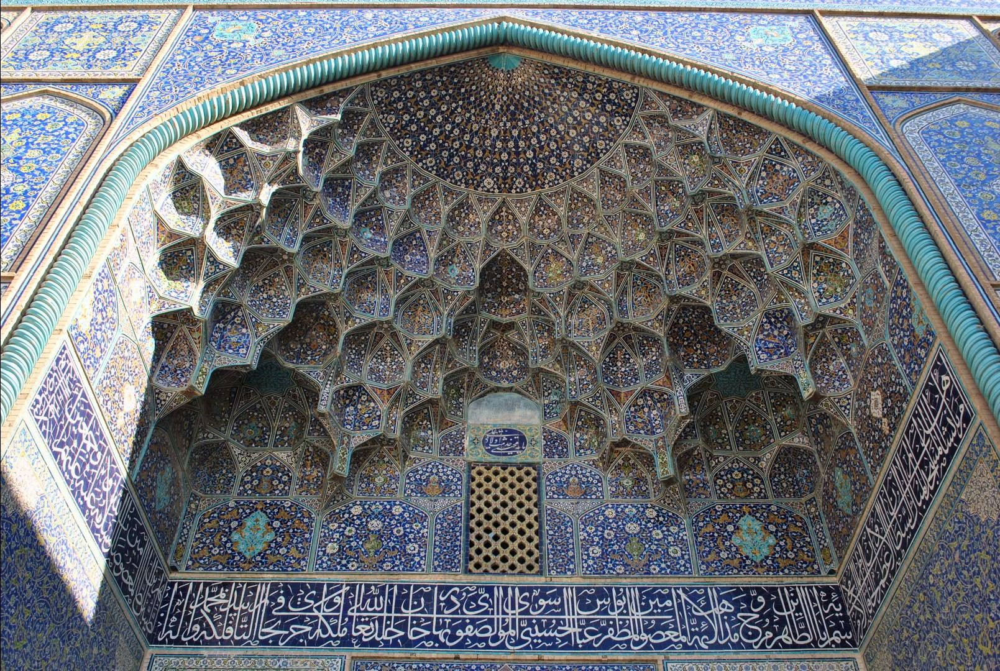
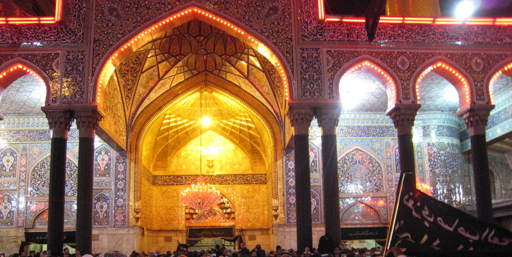
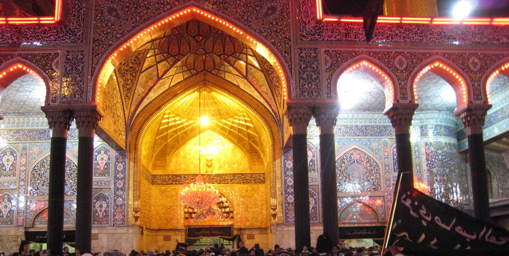
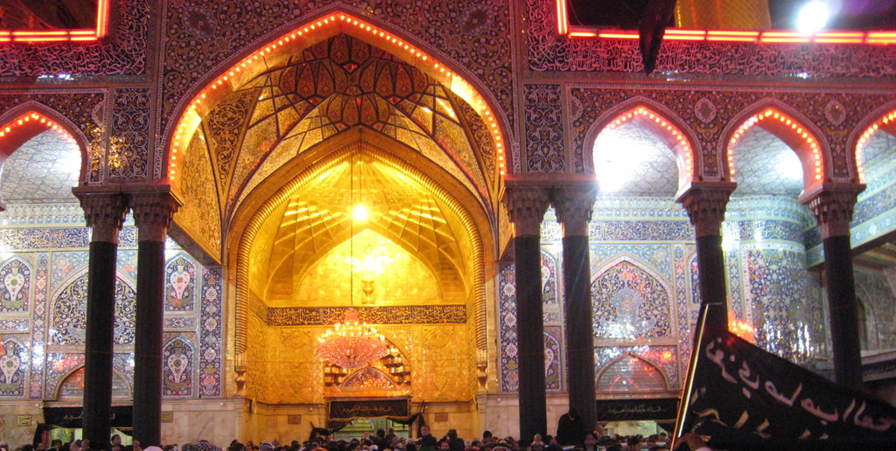

Islam originated in Saudi Arabia during the 7th century. Islam is established on the teachings of Muhammad, which can be found in the Qur’an, the sacred text of Islam. The principal belief of Islam is that Allah is the one and true God as well as the creator of the world. Islam is divided into 2 denominations, Sunni and Shia. both of which have different views regarding the leadership of the Muslim nation. Islam is practiced by 1.6 billion people.
- Shahada: Testifying to God's One-ness
- Salat: Prayer (generally 5 times a day)
- Zakat: Giving charity
- Sawm: Fast during the daylight hours of the month of Ramadan
- Hajj: Pilgrimage to Mecca at least once in a lifetime
ISLAMIC ARCHITECTURE







 


❮
❯
Caption Text
ISLAM FAQ
Stuff to know.
The primary sources of knowledge in Islam are the Qur’an, which Muslims generally believe is the divinely revealed word of God, and the Sunnah, which refers to the precedents of the Prophet Muhammad (meaning: what he said, did, approved, disapproved, allowed, etc.) Much of the Sunnah is from the collection of sayings or reports known as hadith, or prophetic tradition. The hadith describe actions of the Prophet Muhammad or actions that his companions attributed to his teachings. Hadith also elaborate and provide context to the Quran. For Shia Muslims, the rulings of the twelve Imams are also considered a primary source, in addition to the Quran and Sunnah.
The majority of Sunnis and Shias share the same core beliefs of Islam—the oneness of God and the prophethood of Muhammad—and adhere to the Five Pillars. The main differences between them today are their sources of knowledge and religious leadership. In addition to the Qur’an and hadith, the Shias and the many sects that comprise them rely on the rulings of their Imams and resulting variations in beliefs and practices. The difference originated from the question of succession after the death of the Prophet Muhammad, and is related to differing views about appropriate leadership for the Muslim community. Shias believe that succession lies only with the family and certain descendants of the Prophet Muhammad, while Sunnis believe that the Muslim community was free to choose the most qualified person as ruler.
The better term for veil, as some people say, is actually called a hijab. The Arabic word hijab literally means curtain. When used to refer to dress, it usually refers to a headscarf. Hijab is often wrongly used interchangeably with the terms burqa and niqab. Hijab is generally used to refer to a headscarf, Burqa to a covering of the entire body including the face, while Niqab refers to a face covering that conceals most of the face but exposes the eyes. Some Muslim women wear hijab while others do not and expressions of hijab vary greatly by culture, individual taste, and conviction. The answer to this question depends on whom you’re talking to. The wearing of hijab is a matter of free choice by women in most of the Muslim world. Women who choose to wear it do so for a variety of reasons: as a sign of identity, as an act of devotion to their faith, or to indicate that they do not want to be judged by their physical characteristics.
PLARGIARIZED There is no specific teaching in traditional Islamic sources forbidding images of the Prophet Muhammad, and in fact one can find representations of Muhammad and other prophets in different periods of Islamic history. What scholars warn against is the worship of such images, which in more recent times has led some groups to promote the idea that it is forbidden to represent the Prophet Muhammad.
Prayer among Muslims can take many forms. The most common forms are Salat (ritual prayer), Dhikr (remembrance of God, usually involving the repetition of God’s names), and Dua (asking God for a need, desire, or for forgiveness).
Ramadan is the ninth month of the Islamic lunar calendar, and in accordance with the Five Pillars, Muslims around the world spend the daylight hours fasting. The fast is intended to bring the faithful closer to God and to remind them of the suffering of those less fortunate. Muslims often donate to charities during the month and feed the hungry. Fasting is also an exercise in self-restraint, as it is a way to physically and spiritually detoxify. Ramadan is a time to detach from worldly pleasures and focus inward on one’s prayers. Many Muslims dress more conservatively during Ramadan and spend more time at the mosque than at any other time of the year.
Halal is an Arabic word meaning lawful or permitted. The opposite of halal is haram, meaning unlawful or prohibited. When the terms are specifically brought into the context of food, halal refers to any food product that is not prohibited. For meat products, halal means that the animal was slaughtered according to Islamic guidelines, which include reciting God’s name over the animal before slaughter and draining all the blood from the animal (it is very similar to the Jewish law to prepare meat as kosher).
No, it does not. The holy book of Islam, the Quran, forbids the killing of innocent people. The word Islam came from the Arabic root Salema, which means peace and obedience. Chapter 5, verse 32 of the Quran says We ordained for the Children of Israel that if any one slew a person -- unless it be for murder or for spreading mischief in the land -- it would be as if he slew the whole people; and if anyone saved a life, it would be as if he saved the life of the whole people.